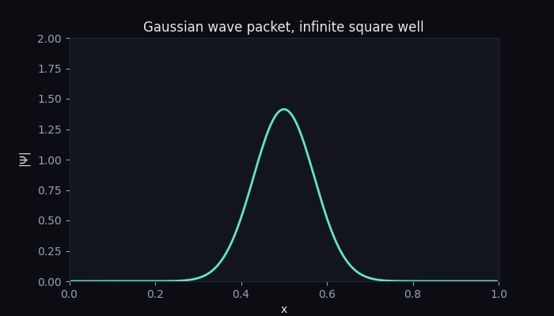
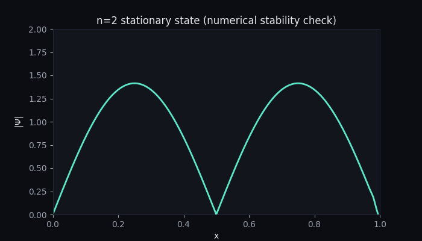
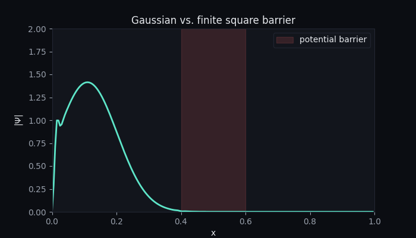

1D Schrodinger Equation Solver
A from-scratch numerical solver for the time-dependent Schrodinger equation, using the Crank-Nicolson finite-difference method, with an interactive notebook exploring particle in a box, Gaussian wave packets, and finite potential barriers.
What it does
This started as a way for me to familiarize myself with both the time-dependant Schrodinger equation as well as solving PDEs numerically. My program derives the Crank-Nicolson finite-difference scheme from the PDE itself, turns each time step into a tridiagonal linear system, and solves that system frame-by-frame to animate how a wavefunction evolves under some classic potentials.
Results
The notebook itself uses live widgets to switch between wavefunctions and potentials interactively. Instead, here are rendered results from running it, generated directly from the same simulation code. If you want to play with the actual program, click the button at the top of the page.

Gaussian wave packet, infinite square well
A Gaussian initial state has no single definite energy, so it disperses over time — exactly the spreading behavior you'd expect from the uncertainty principle, reproduced numerically.

n=2 stationary state — stability check
Seeding the solver with an exact energy eigenstate should leave the probability density essentially unchanged over time. It does — this is the numerical method validating itself.

Wave packet vs. finite square barrier
Introducing a finite potential barrier (shaded region) measurably changes the wavefunction's evolution compared to the free case - check out that tunnelling!
The derivation and code
The full notebook with the derivations in LaTeX, and the actual simulation code is embedded below.
Open the notebook in a new tab →
← Back to all projects